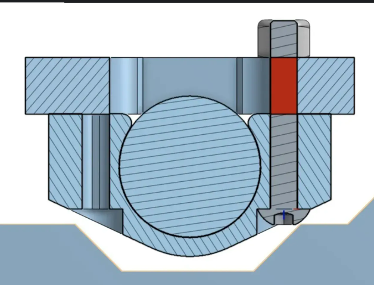
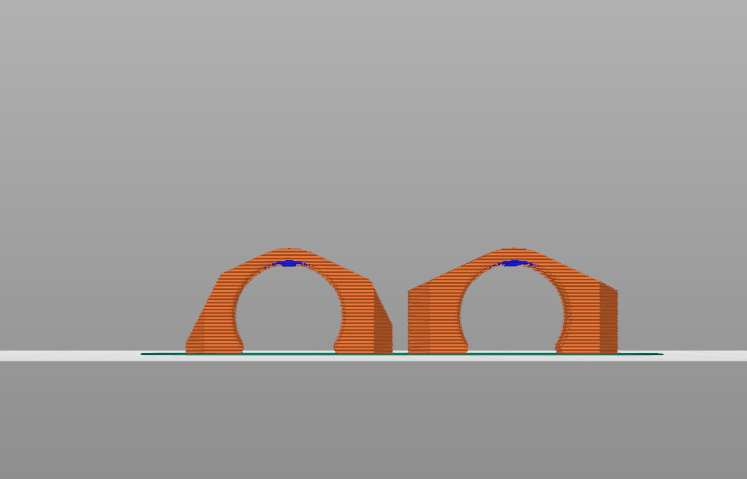

The first step in upgrading my outdated 12v Prusa MK2s to 24v was, obviously, sourcing the 24v PSU. I accomplished this through a sacrificial, donor ender 3 I found for free on facebook marketplace.
The next step was to source the bed and, crucially, a 24v output, 12v input MOSFET.

This MOSFET gets wired to the 12v control board, using the old 12v output, and switches on a 24v power source, providing the power needed for the bed.
Obviously, the temperature of the bed is calibrated through the board, so it can trigger on and off repeatedly to maintain a constant temperature.
After sourcing these parts, the next step was to test them all.

Following this, I had to design and print mounts for all of my new stuff, the PSU and the MOSFET, while I waited for a steel frame to come in directly from Prusa.
The designing of the mounts were, as per usual, easier said than done. My first step was to measure out the MOSFET and design a backing for it, which went smoothly. The issue soon became one of planning, where exactly should the mount for it go?

However, I have to prioritze certain things. If I allowed myself to get dragged into side projects, this upgrade would never truly finish. So, I pushed on.
Once the steel frame came in, I immediately started mounting my bed to it... THIS is where the problems lied.
 I spent about 3 straight days printing, designing, and trying on different mounts for my metal frame. You see, the way the printer moves the bed around is by gliding it on smooth rods with LMU8 Bearings.
However, since the MK2S is nearing a decade old now, prusa has since upgraded the way they move said bed. Due to this, almost all files online are either deisgned for the MK3 Frame (SLIGHTLY different), or designed for the old steel frame, not the new one prusa currently sells.
So again, I had to prioritize certain things. I have a business to run, I cannot have 50% of my production be indefinetely out of order...... So I committed a mortal sin;
I ziptied the bearings to the frame
Funnily enough though, it actually worked out a LOT better than I thought. There is actually not even a noticable drawback to using this method, and in fact on older versions of the mk2 they actually recommended it!
After I got the bed all installed and zip tied, I then (finally) created my mount for the MOSFET, placed it on the back of my RAMBO housing, and considered this project....
FINISHED!